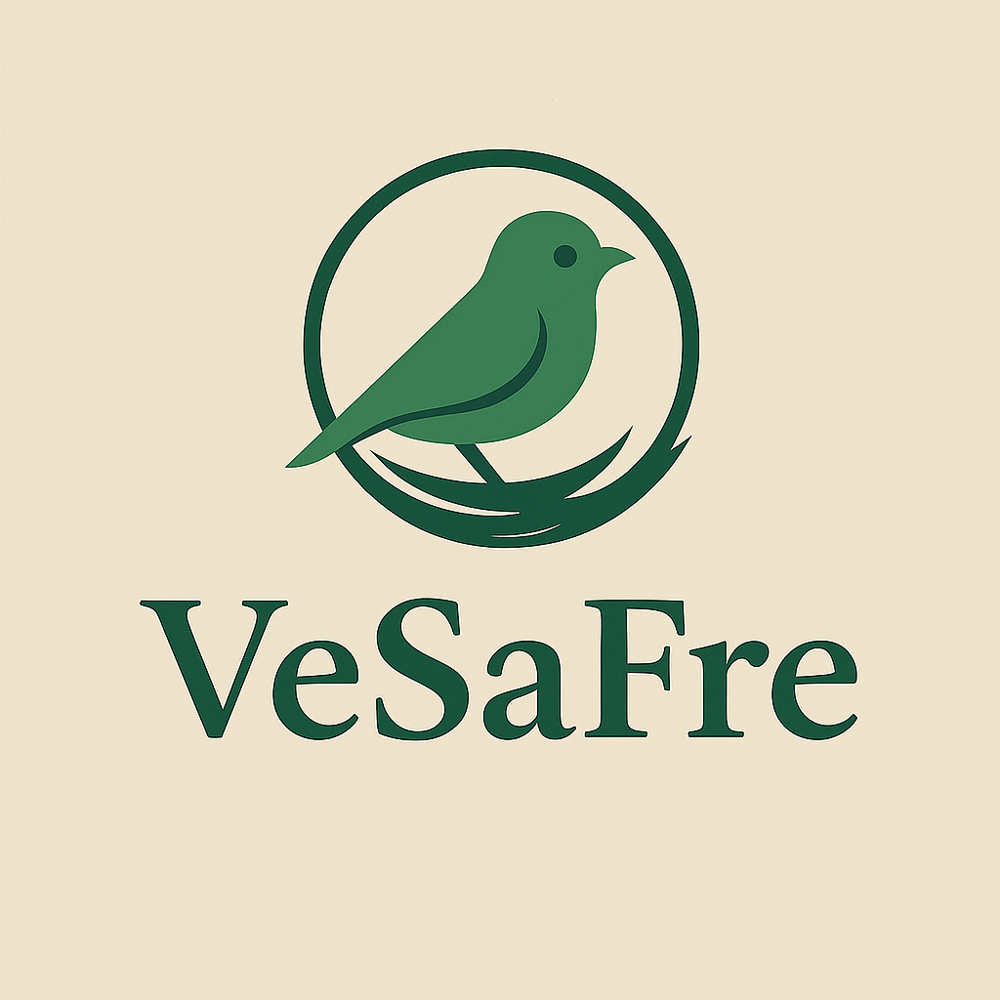
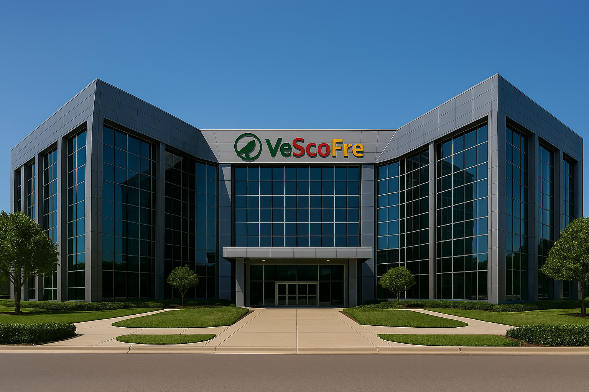
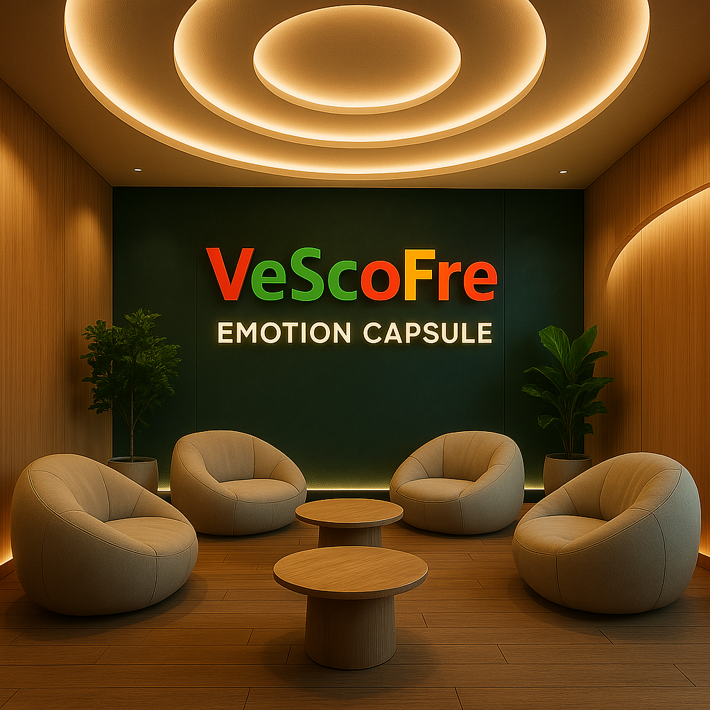
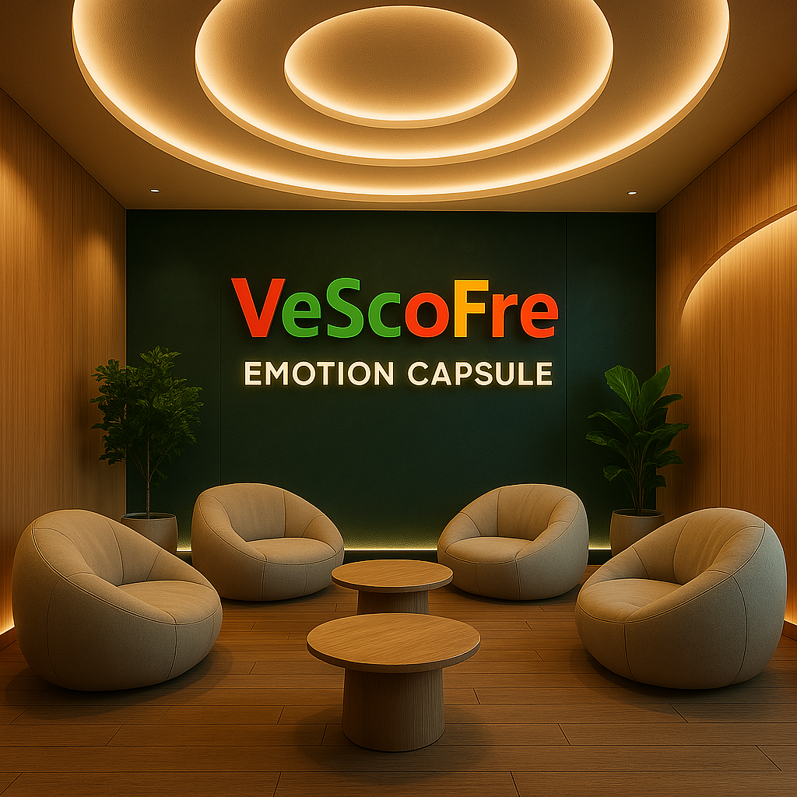

🕊️ Lời mở đầu giới thiệu Tập đoàn VeScoFre :
"Nơi công nghệ thấu hiểu con người — nơi cộng đồng là chủ thể của tương lai."
Trong thế giới đang chuyển mình chóng mặt bởi dữ liệu, thuật toán và tốc độ, VeScoFre Group ra đời
như một nhịp thở ngược dòng: chậm lại để lắng nghe con người.
Không phải là một tập đoàn công nghệ đơn thuần, VeScoFre là một hệ sinh thái xã hội số có linh hồn
— nơi mỗi hành vi phản hồi, mỗi dữ liệu cá nhân, mỗi quyết định chiến lược đều được dẫn dắt bởi cộng đồng làm chủ.
Với VeSaFre là hạt nhân vận hành — nền tảng mạng xã hội minh bạch dựa trên điểm số cảm xúc và phản hồi đạo đức
— VeScoFre đang mở rộng ảnh hưởng đến:
Giáo dục (VeSFEdu):
nơi người học phản hồi, giảng viên được vote bằng cảm xúc thực
Quản trị xã hội (VeSDAOFre):
nơi chính sách được quyết định bởi niềm tin cộng đồng
Thể thao (VeSportFre):
nơi fan sở hữu đội bóng, chọn chiến thuật bằng token
Dữ liệu cá nhân (VeSDataFre):
nơi người dùng định giá quyền riêng tư bằng đạo đức
Sáng tạo Web3 (VeSLaFre):
nơi developer tạo ra sản phẩm tử tế qua vote cộng đồng
VeScoFre chọn một con đường táo bạo: không chạy theo xu hướng, mà xây dựng một xã hội văn minh trong thế
giới số — nơi giá trị không nằm trong dòng mã, mà trong từng tiếng nói được tôn trọng.
"Tập đoàn này không định nghĩa bởi sản phẩm.
Tập đoàn này định nghĩa bởi cộng đồng.
Chúng tôi không tạo ra nền tảng.
Chúng tôi xây dựng nền móng cho một thế hệ biết lắng nghe lẫn nhau."
— VeScoFre: xã hội là chủ thể. Công nghệ là phương tiện. Minh bạch là nguyên lý.
Sau đây là ca khúc mà nhà sáng lập nên VeScoFre rất yêu thích, tôi xin chân thành gửi đến bạn như lời
chào bạn đến với chúng tôi và cũng như là lời cảm ơn sâu sắc nhất mà bản thân tôi có thể gửi đến bạn về sự
quan tâm của bạn dành cho chúng tôi. Trân trọng!
🧬 Hệ Sinh Thái Tập Đoàn VeScoFre Group
🌐 1. VeSaFre(Hạt nhân cốt lõi)
- Logo chính thức của nền t

- Mạng xã hội phản hồi cảm xúc – trung tâm dữ liệu & đạo
- Thuật toán ByBird:
Xử lý phản hồi Trust / Insight / Emotion
- Vote Decay:
√Up – √Down giảm theo thời gian, tránh spam và bias
- Donate Flow VSF:
Hệ chia thưởng minh bạch: creator – burn – system
- Sơ đồ cảm xúc:
Bản đồ tâm lý cộng đồng theo từng chủ đề, gắn
- DMv Engine:
Định giá đạo đức dữ liệu người dùng qua hành vi phản hồi
==> 💎 Là trái tim luân chuyển dữ liệu, niềm tin và token cho toàn hệ sinh thái.
🏛️ 2. VeSDAOF
- Hệ thống quản trị xã hội số dựa trên phản hồi minh
- DAO xử lý tranh chấp xã hội qua vote cảm
- Ngân sách địa phương quyết định bằng TIE Score từ VeS
- Các thành phố thử nghiệm vận hành “DAO Civic Disp
==> 🔗 Kết nối trực tiếp tới: Vote Logs, Insight Maps, Trust Weight từ VeSaFre
🎓 3. VeSFE
- Nền tảng giáo dục cảm xúc & đạo đức dữ
- Mô hình DAO Classroom: cộng đồng đánh giá giảng viên, học
- Học sinh sinh viên nhận VSF Token nếu bài phản hồi đạt Insight Score
- Giáo trình được cá nhân hóa dựa trên sơ đồ cảm xúc cộng
==> 📘 Dữ liệu lõi: Sơ đồ Insight, lịch sử phản hồi từ VeSaFre
>🔐 4. VeSDataF
- Ví dữ liệu phi tập trung – người dùng làm
- DMv (Data Moral Value): người dùng gán giá trị đạo đức cho dữ liệu cá
- DaMark: doanh nghiệp phải qua khâu xét duyệt cộng đồng để khai
- Token hóa dữ liệu theo độ tín nhiệm nhận từ phản hồi cảm
==> 🔍 Dữ liệu lõi: TIE Logs, biểu đồ quyền riêng tư từ VeSaFre
🧪 5. VeSLaF
- Quỹ sáng tạo & nền tảng phát triển có phản
- DevHub dùng API VeSaFre để gắn phản hồi cảm xúc vào sản
- Các module được vote & phản biện trước khi đi vào phát t
- VSF Token phân phối theo cấp độ phản hồi cộng
==> 💡 Dữ liệu lõi: Insight Trigger, Emotion Hook, ByBird Score
⚽ 6. VeSportF
- Hệ sinh thái thể thao Web3 – nơi cảm xúc kiến tạo trận
- DAO Fan: cộng đồng bầu chiến thuật, áo đấu,
- VSF Token là “cổ phần vi mô” cho cổ động
- Livestream, NFT khoảnh khắc, reward theo Emotion Score trận
==> 🔥 Dữ liệu lõi: Real-time Fan Vote, TIE Match Score từ VeSaFre
Đôi nét về Tập đoàn công nghệ số VeScoFre
Hình ảnh về VeScoFre:
  

Giới thiệu về đồng tiền đại diện VSFcoin của hệ sinh thái :
- Token gốc ERC-20 (Ethereum) + bridge BSC/Polygon
- Symbol: VSFc, Decimals: 18, Max Supply: 1 000 000 000 VSF
- Upgradeable contract (OpenZeppelin proxy), gasless via Biconomy